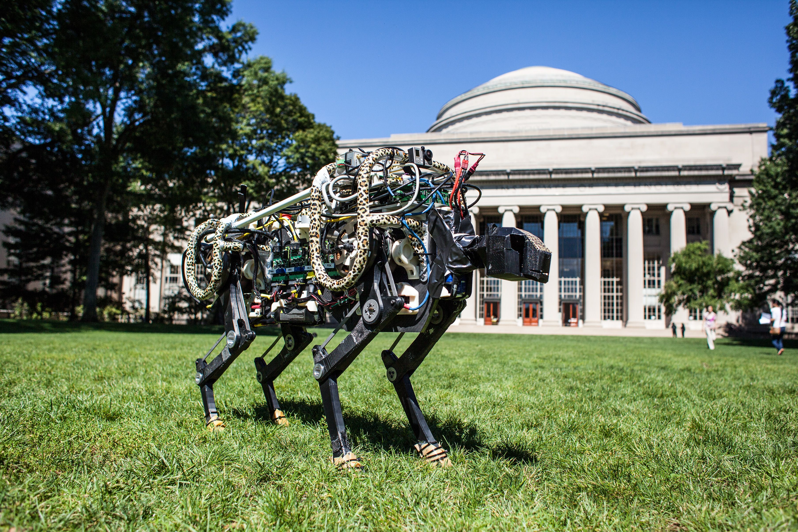
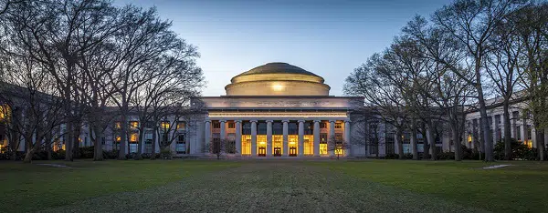
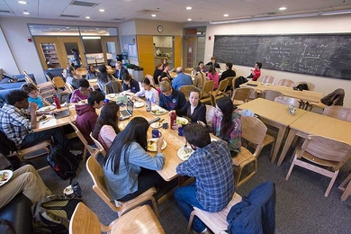
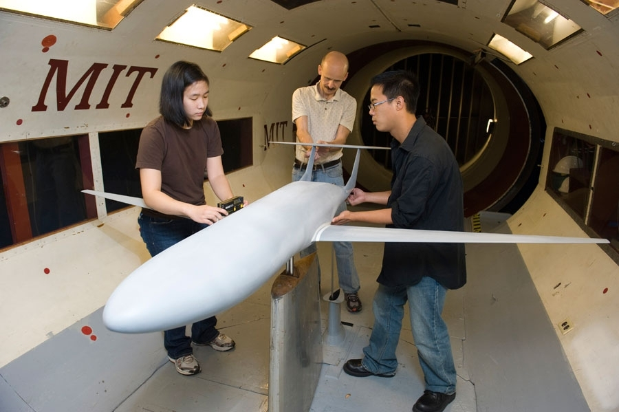

Innovation

MIT people want to know how things work — and are inspired to make them work better. Our “mind and hand” philosophy spurs real-world engagement, and thanks to MIT’s entrepreneurial culture, Greater Boston’s innovation ecosystem brims with companies spun out from MIT.

Top Resources
- MIT Office of Innovation Resource Guide
- MIT InnovationHQ
- Martin Trust Center for MIT Entrepreneurship
- MIT Sandbox Innovation Fund Program
- Deshpande Center for Technological Innovation
- D-Lab
- The Engine
- Solve
- Technology Licensing Office
- Venture Mentoring Service

Innovations from MIT often address the problems humanity most needs to solve, including sustainable energy, urban resiliency, fresh water, food for all, cancer, Alzheimer’s, and infectious disease. By helping MIT inventors connect with mentors, collaborators, networks, and funding, we help them translate new science into transformative innovation. MIT entrepreneurs make a sizable global impact: The active companies formed by living MIT alumni produce estimated annual revenues on par with the gross domestic product of the 10th-largest economy in the world.

Research
Dec 11, 2023

At MIT, pushing the boundaries of knowledge and possibility is our joyful obsession, and we celebrate fundamental discoveries and practical applications alike. As educators, we also value research as a potent form of learning by doing.
Centers, Labs & Programs

Research flourishes in our 30 departments across five schools and one college, as well as in dozens of centers, labs, and programs that convene experts across disciplines to explore new intellectual frontiers and solve important societal problems. Our on-campus research capabilities are enhanced through the work of MIT Lincoln Laboratory, the Woods Hole Oceanographic Institution, active research relationships with industry, and a wide range of global collaborations.